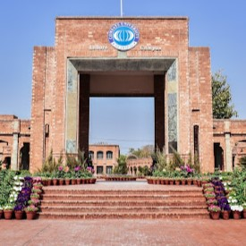
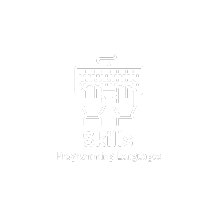

About Me
Education
My academic journey reflects a deliberate pursuit of knowledge across diverse disciplines, navigating through literature, science, mathematics, and beyond to cultivate a versatile skill set and a profound understanding of the world. This journey has honed my critical thinking skills, enabling me to synthesize complex ideas and navigate interdisciplinary landscapes with confidence. As a dynamic learner, I am driven by a profound sense of curiosity and a thirst for enlightenment that transcends disciplinary boundaries, propelling me towards a deeper understanding of the human experience and intellectual excellence.
MS/M.Phil. Mathematics (2021-2024)
I have completed my Masters in Mathematics from COMSATS University Islamabad (CUI), Lahore which is one of the top public universities in Pakistan. It is ranked #651-660 in QS World University Rankings 2024 and ranked #251-300 in Mathematics in QS WUR Ranking by Subject.
Embarking on a journey of relentless pursuit, I've traversed through a myriad of rigorous and diverse courses, culminating in the defense of my thesis under the supervision of Dr. Sadia Arshad. Below, I humbly present the culmination of my academic journey:
- Numerical Solution of ODEs by Dr. Ayesha Sohail
- Advanced Topics in Graph Theory by Prof. Dr. Muhammad Hussain
- General Relativity by Dr. Shamaila Rani
- Theory of Groups by Dr. Adeel Farooq
- Commutative Algebra by Prof. Dr. Sarfraz Ahmad
- Fuzzy Logic and Applications by Dr. Atiq-ur-Rehman
- Mathematical Biology by Dr. Sana Javed
- Applied Statistical Learning by Mr. Majid Hasan Khattak
B.Ed. Secondary (2022-2024)
I pursued my B.Ed. Secondary (1.5-Year) at Virtual University, Pakistan, which comprised three semesters.
M.Sc. Mathematics (2018-2020)
I completed a two-year Master of Science degree in Mathematics, encompassing a total of 16 years of education, at PMAS Arid Agriculture University, Rawalpindi. During this time, I immersed myself in the profound complexities of Pure and Applied Mathematics.
B.Sc. (Maths A-Course, Maths B-Course, Physics) (2015-2017)
I completed a two-year Bachelor of Science degree, comprising Maths A-Course, Maths B-Course, and Physics, which is equivalent to 14 years of education, from the esteemed University of Gujrat. This foundational education provided me with a solid grounding in mathematical principles and physical sciences, paving the way for further academic pursuits and professional endeavors.
Conferences/Seminars
- International Conference on "Mathematical Modeling and Scientific Computing for Industrial Research" (MMSCIR-2022).
- One Day International Symposium on Mathematical Sciences.
{kind=link}
{kind=link}
Portfolio
This Portfolio is a compilation of all the Data Science and Data Analysis projects I have done for academic, self-learning, and hobby purposes. This portfolio also contains my Achievements, skills, and certificates. It is updated regularly.

Core Competencies
Proficient in a wide array of methodologies including Machine Learning, Deep Learning, Time Series Analysis, and Natural Language Processing. Skilled in statistical techniques, A/B Testing, and Experimentation Design, with expertise in Explainable AI. Proficient in Python libraries such as Pandas, Numpy, and Scikit-Learn, as well as tools like MySQL, Tableau, and Git. Experienced in utilizing Amazon Web Services (AWS) and proficient in languages including Python, MATLAB, SQL, and C++.
Methodologies
Machine Learning, Deep Learning, Time Series Analysis, Natural Language Processing, Statistics, Explainable AI, A/B Testing and Experimentation Design, Big Data Analytics.
- Machine Learning: Empowers systems to learn from data iteratively, making decisions without explicit programming, vital for classification, regression, clustering, and reinforcement learning.
Read More
- Deep Learning: Mimics the human brain through artificial neural networks, excelling in tasks like image recognition, speech synthesis, and natural language understanding.
- Time Series Analysis: Deciphers trends, seasonal patterns, and irregularities in temporal data, crucial for forecasting in finance, environmental modeling, and beyond.
- Natural Language Processing (NLP): Bridges human language and machine understanding, enabling tasks like sentiment analysis, machine translation, and conversational AI.
- Statistics: Provides the framework for discerning signal from noise, deriving meaningful inferences, and quantifying uncertainty through hypothesis testing and regression analysis.
- A/B Testing and Experimental Design: Empowers rigorous hypothesis testing and performance evaluation, enabling optimization of interventions and strategies through systematic comparison of variations.
- Big Data Analytics: Extracts actionable insights and uncovers hidden patterns at scale, leveraging data as a strategic asset for innovation and competitive advantage.

Skills / Programming Languages
With these skills and programming languages at my disposal, I navigate the data science lifecycle with confidence, from data acquisition and preprocessing to modeling, evaluation, and deployment. In every project I undertake, I leverage these tools to drive innovation, make informed decisions, and unlock the transformative power of data. Whether it's cleaning and preparing datasets with Pandas, implementing machine learning algorithms with Scikit-Learn, or visualizing insights with Matplotlib, I rely on my expertise to extract meaningful insights and drive impactful outcomes. From exploring complex datasets to deploying predictive models, I harness the full potential of these tools to create value and drive progress in every data-driven endeavor I undertake.
Read More
- 
- Python: At the forefront stands Python, a language renowned for its simplicity and versatility. With Python as my primary conduit, I seamlessly integrate various libraries and frameworks, including Pandas, Numpy, Scikit-Learn, Scipy, Keras, and Matplotlib, to manipulate, analyze, and visualize data with finesse and efficiency.
- Pandas: Facilitates efficient data manipulation and analysis with its intuitive data structures and powerful functions.
- Numpy: Unleashes the full potential of numerical computing in Python, offering high-performance multidimensional arrays and extensive mathematical functions.
- Scikit-Learn: Delivers high-quality machine learning models and algorithms, supporting various machine learning tasks, such as classification, regression, and clustering.
- Scipy: Offers a wide range of scientific and mathematical functions, including statistical distributions, optimization, and interpolation.
- Keras: Provides the foundational building blocks for deep learning models, including neural networks, convolutional neural networks, and recurrent neural networks.
- Matplotlib: Offers a comprehensive library for creating static, animated, and interactive visualizations with minimal coding.
- MATLAB: Offers a robust environment for numerical computing and algorithm development, particularly in fields such as signal processing, image processing, and control systems.
- SQL: Equips me with querying capabilities essential for extracting insights from structured data stored in databases, completing the toolkit for comprehensive data analysis and manipulation.
- Tableau: Offers a powerful data visualization tool, enabling me to extract meaningful insights from data and create actionable insights.
- Power BI: Delivers actionable insights and data visualizations, making data-driven decisions and driving innovation.
- HTML: My proficiency in HTML allows me to craft elegant and intuitive web interfaces for data visualization and presentation. With HTML, I can structure content seamlessly, ensuring clarity and accessibility in displaying complex datasets. Leveraging HTML alongside CSS and JavaScript, I create dynamic and engaging data-driven applications that empower users to explore and interact with data effectively.
Tools
Visual Studio Code, Jupyter Notebook, MySQL, Tableau, Power BI, Git, PySpark, Amazon Web Services (AWS), Flask, MS Excel, MiniConda, Overleaf, LaTex, MS Office, Canva.